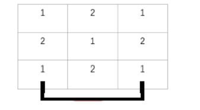

HDU5926. Mr. Frog’s Game
内存限制：2000/1000 MS (Java/Others) 时间限制：65536/65536 K (Java/Others)
题目描述
One day, Mr. Frog is playing Link Game (Lian Lian Kan in Chinese).

In this game, if you can draw at most three horizontal or vertical head-and-tail-connected lines over the empty grids(the lines can be out of the whole board) to connect two non-empty grids with the same symbol or the two non-empty grids with the same symbol are adjacent, then you can change these two grids into empty and get several more seconds to continue the game.
Now, Mr. Frog starts a new game (that means there is no empty grid in the board). If there are no pair of grids that can be removed together，Mr. Frog will say ”I’m angry” and criticize you.
Mr. Frog is battle-scarred and has seen many things, so he can check the board in a very short time, maybe one second. As a Hong Kong Journalist, what you should do is to check the board more quickly than him, and then you can get out of the room before Mr. Frog being angry.
In this game, if you can draw at most three horizontal or vertical head-and-tail-connected lines over the empty grids(the lines can be out of the whole board) to connect two non-empty grids with the same symbol or the two non-empty grids with the same symbol are adjacent, then you can change these two grids into empty and get several more seconds to continue the game.
Now, Mr. Frog starts a new game (that means there is no empty grid in the board). If there are no pair of grids that can be removed together，Mr. Frog will say ”I’m angry” and criticize you.
Mr. Frog is battle-scarred and has seen many things, so he can check the board in a very short time, maybe one second. As a Hong Kong Journalist, what you should do is to check the board more quickly than him, and then you can get out of the room before Mr. Frog being angry.
输入格式
The first line contains only one integer T ($T \leq 500$), which indicates the number of test cases.
For each test case, the first line contains two integers n and m ($1 \leq n,m \leq 30$).
In the next n lines, each line contains m integers, j-th number in the i-th line means the symbol on the grid(the same number means the same symbol on the grid).
For each test case, the first line contains two integers n and m ($1 \leq n,m \leq 30$).
In the next n lines, each line contains m integers, j-th number in the i-th line means the symbol on the grid(the same number means the same symbol on the grid).
输出格式
For each test case, there should be one line in the output.
You should output “Case #x: y”，where x is the case number(starting from 1), and y is a string representing the answer of the question. If there are at least one pair of grids that can be removed together, the y is “Yes”（without quote), else y is “No”.
You should output “Case #x: y”，where x is the case number(starting from 1), and y is a string representing the answer of the question. If there are at least one pair of grids that can be removed together, the y is “Yes”（without quote), else y is “No”.
样例
样例输入
2
3 3
1 2 1
2 1 2
1 2 1
3 3
1 2 3
2 1 2
3 2 1样例输出
Case #1: Yes
Case #2: No
Hint
first sample can be explained as below.
